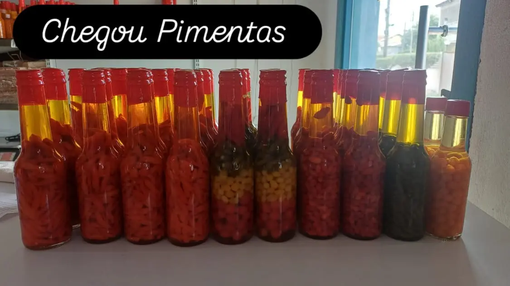

Pimentas Caseiras
Conservas artesanais — Da horta ao pote
Temos diversas opções curtidas no azeite, no vinagre ou puras. Consulte a disponibilidade do dia!
Consultar Pimentas DisponíveisRetire na loja: R. Bom Jardim, 379 — Centro, Cáceres.
Pimentas da Casa: Tradição Curtida no Tempo
As pimentas caseiras da Peixaria Rio Paraguai nascem literalmente do quintal. Cultivamos diferentes variedades — cumari, bode, malagueta e dedo-de-moça — em nossa própria horta, sem o uso de agrotóxicos. A colheita é feita à mão, no ponto ideal de maturação, quando as pimentas estão no auge do sabor e do ardume. É esse cuidado desde a origem que diferencia nossas conservas de qualquer produto industrializado encontrado nas prateleiras do supermercado.
O Processo de Curtimento Artesanal
Cada pote é preparado com atenção e paciência. As pimentas lavadas e secas são arrumadas manualmente nos vidros esterilizados e cobertas com o líquido de conservação escolhido: vinagre de álcool para a versão clássica, que realça o ardume e a acidez; azeite de oliva extravirgem para a versão mais suave e aromática, perfeita para regar pizzas e bruschetas; ou simplesmente seu próprio suco fermentado na versão pura da cumari e da bode, para os amantes de sensações fortes. Após o fechamento, os potes descansam por pelo menos 15 dias antes de serem comercializados — tempo necessário para que os sabores se casem completamente.
O Par Perfeito para os Pratos do Pantanal
Não existe peixe frito do pantanal completo sem uma boa pimenta ao lado. A cumari no vinagre, com seu ardume persistente e leve toque ácido, é o acompanhamento clássico para um tambaqui frito ou um pintado na chapa. Já o caldo de piranha fumegante ganha uma dimensão completamente nova quando você pinga algumas gotas da conserva no azeite — a gordura da pimenta se mistura ao caldo e cria uma emulsão de sabores que nenhum tempero industrializado consegue imitar. Nossas pimentas também são excelentes em carnes, feijão e até em tapiocas com queijo.
Disponíveis em potes de vidro individuais, as Pimentas Caseiras da Peixaria Rio Paraguai fazem sucesso tanto na mesa do dia a dia quanto como presente gastronômico. Encomende pelo WhatsApp e escolha a sua conserva favorita — ou surpreenda com um kit com as três versões.